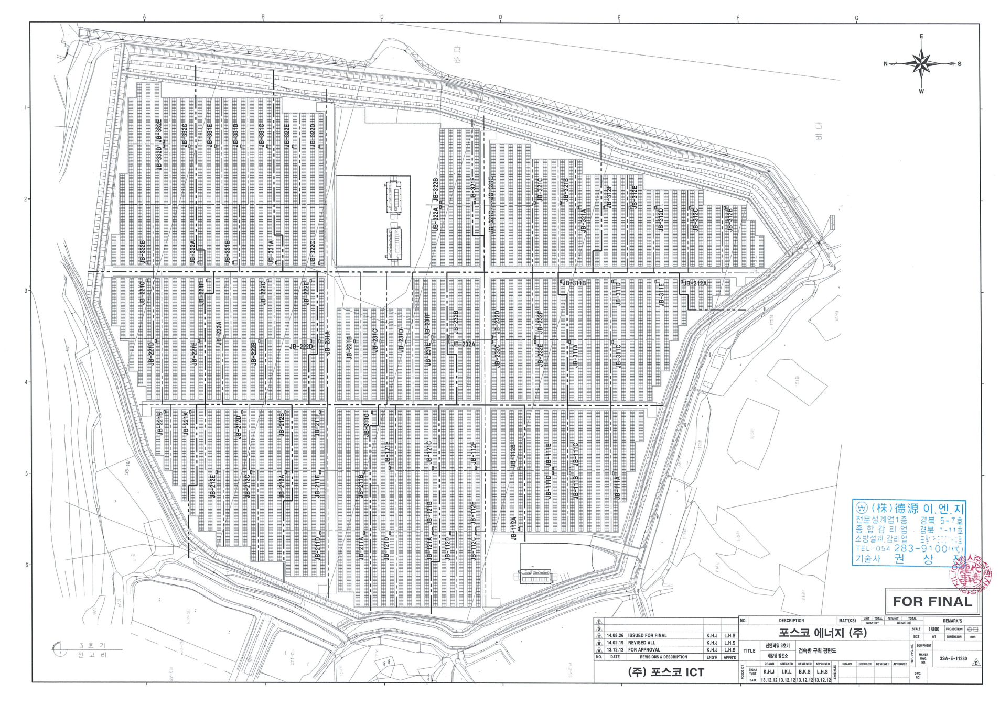
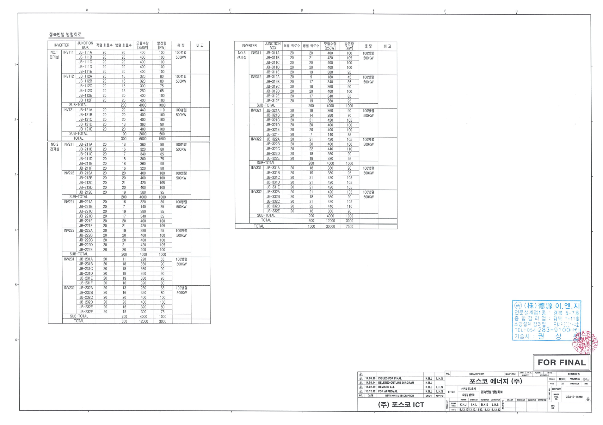
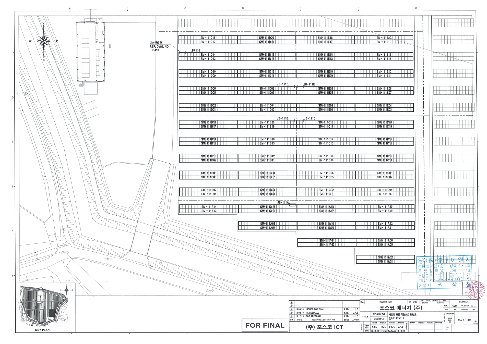
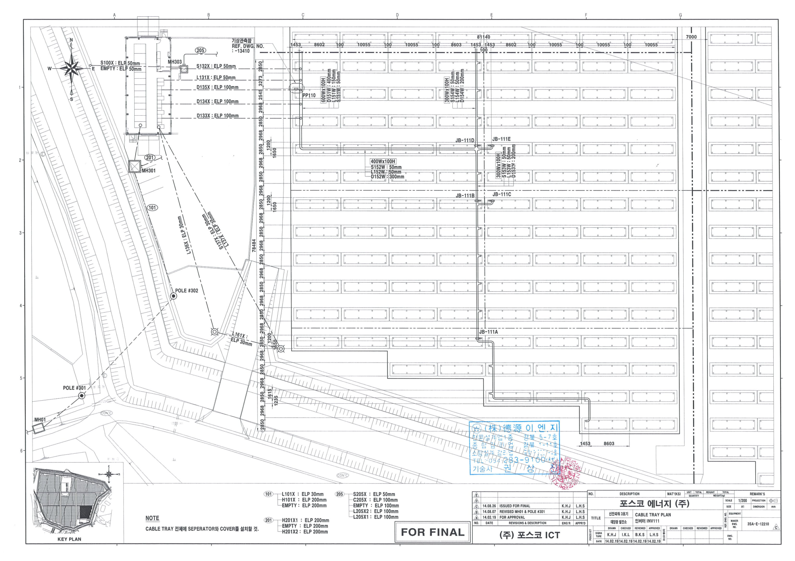
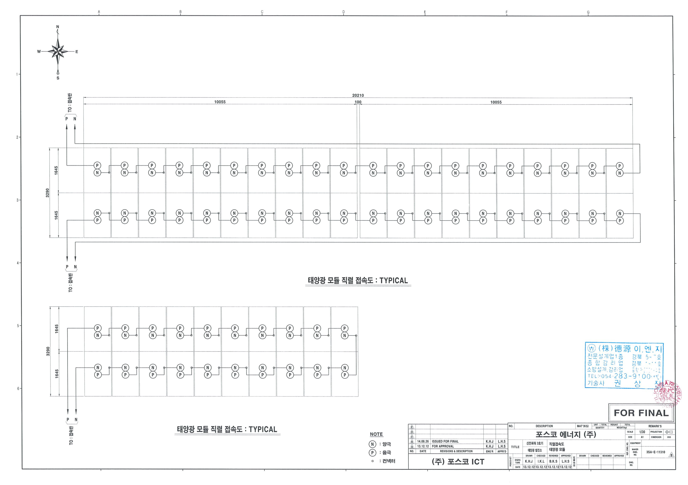

원본 준공도서 CAD의 모듈 배치, 스트링 평면, 접속반 병렬회로표, 전기실 기기 배치도와 Cable Schedule.xls를 대조했습니다. 원본 파일은 변경하지 않았습니다.
| 항목 | 검증 및 구현 범위 |
|---|---|
| 모듈 → 스트링 | 30,000개 모듈을 1,500개 스트링에 20개씩 중복·누락 없이 대응. 기존 S3-G… ID 유지. |
| 스트링 → 접속반 → 인버터 | 82개 접속반의 회로 수가 11240 병렬회로표와 일치. 인버터 15개. DC P/N 케이블 3,164개는 목록의 출발·도착과 일치. |
| AC·고압 | 양 끝 설비 위치가 있는 342개 항목의 단자 간 개략 연결. 실제 실내 트렌치·외부 고압 포설 경로의 확정 모델이 아님. |
| 트레이·전선관 | 12210~12370 CAD에서 추출한 평면 도면선 2,193개. 높이·단면 형상은 추정이며 도면선은 개별 케이블 중심선이 아님. |
| 나머지 목록 | 원본에서 출발·도착이 명시된 3,836개 항목을 검색 가능. 위치가 미확정인 330개는 3D로 그리지 않음. 원본 병합/공란 행을 임의로 채워 전체 전기회로가 완성됐다고 간주하지 않음. |
연결 관계와 개별 물리 경로를 구분합니다. 모듈 간 점퍼는 11310 표준 직렬접속도에 따른 시각화이며 단자 위치·처짐은 추정입니다. 스트링 인출은 개략 배선, 접속반 간선은 트레이 도면선을 따라 계산한 추정 경로입니다. 목록의 경로 코드가 3D의 모든 분기와 일치하는지 검증된 것은 아닙니다. 화면 선의 길이는 목록상 케이블 길이를 대체하지 않으며 표시 굵기와 색은 식별용입니다. 굴착·포설·전기 안전 검토용 확정 모델이 아닙니다.
평면 정합은 각 상세 도면의 모듈 사각형을 원본 전체 배치에 맞춰 검증했습니다. 대부분 수치 오차 수준이며, 11450의 일부 모듈 배치는 전체 배치와 최대 0.20m, 12320은 최대 0.023m 차이가 있습니다. 원본 전체 배치와 ID를 보존했고 자료 간 차이를 숨기지 않았습니다. 도면·파일 개정이 다를 수 있으므로 첨부 PDF 이미지는 육안 비교 자료, 추출 형상과 회로 ID는 각 CAD 개정 파일이 기준입니다.





자료: C:\3호기준공도서CD\전기\1. 도면. 도면·자료의 권리는 원자료 소유자에게 있습니다. 열화상 분석 결과 및 현장 실물 시리얼과는 별도이며 현재 미연결 상태입니다.